import numpy as np
import pandas as pd
from sklearn.tree import DecisionTreeRegressor
from sklearn.ensemble import GradientBoostingRegressor
import utils
import sklearn
from sklearn import tree
import matplotlib.pyplot as plt
features = np.array([[10],[20],[30],[40],[50],[60],[70],[80]])
labels = np.array([7,5,7,1,2,1,5,4])
plt.scatter(features, labels)
plt.xlabel("Age")
plt.ylabel("Days per week")
plt.show()
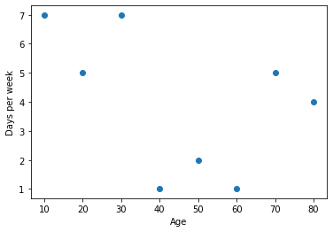
Fitting a decision tree#
decision_tree_regressor = DecisionTreeRegressor(max_depth=2)
decision_tree_regressor.fit(features, labels)
DecisionTreeRegressor(ccp_alpha=0.0, criterion='mse', max_depth=2,
max_features=None, max_leaf_nodes=None,
min_impurity_decrease=0.0, min_impurity_split=None,
min_samples_leaf=1, min_samples_split=2,
min_weight_fraction_leaf=0.0, presort='deprecated',
random_state=None, splitter='best')
utils.display_tree(decision_tree_regressor)
/Users/luisserrano/anaconda3/lib/python3.7/site-packages/sklearn/externals/six.py:31: FutureWarning: The module is deprecated in version 0.21 and will be removed in version 0.23 since we've dropped support for Python 2.7. Please rely on the official version of six (https://pypi.org/project/six/).
"(https://pypi.org/project/six/).", FutureWarning)
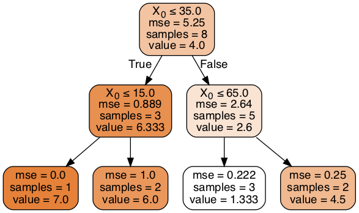
utils.plot_regressor(decision_tree_regressor, features, labels)
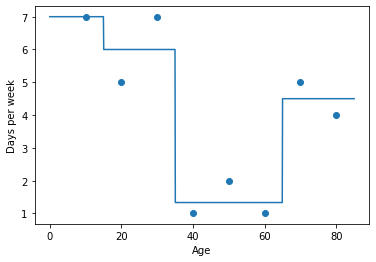
Gradient boosting#
# First weak learner
x = np.linspace(0,85,2)
plt.scatter(features, labels)
plt.plot(x, [4 for i in range(len(x))])
plt.scatter(features, labels, color='blue')
<matplotlib.collections.PathCollection at 0x1a25f7a090>
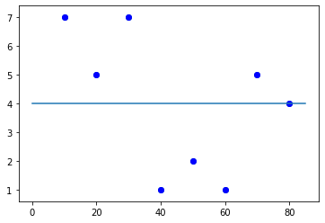
gradient_boosting_regressor = GradientBoostingRegressor(max_depth=2, n_estimators=4, learning_rate=0.8)
gradient_boosting_regressor.fit(features, labels)
gradient_boosting_regressor.predict(features)
array([6.87466667, 5.11466667, 6.71466667, 1.43466667, 1.43466667,
1.43466667, 4.896 , 4.096 ])
utils.plot_regressor(gradient_boosting_regressor, features, labels)
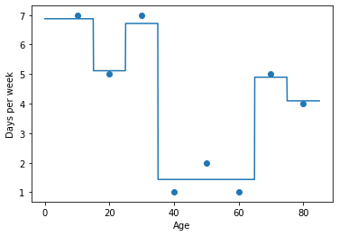
predictions_estimators = []
predictions = np.zeros(8)
centered_labels = labels-labels.mean()
residuals = [centered_labels]
for i in range(len(gradient_boosting_regressor.estimators_)):
weak_learner = gradient_boosting_regressor.estimators_[i][0]
print("\n"+"*"*50+"\n")
print("Weak learner", i+1)
preds = weak_learner.predict(features)
predictions_estimators.append(preds)
print("Residuals to predict:", residuals[-1])
print("Predictions:", preds)
predictions += preds*0.8
#plt.scatter(features, predictions)
#plt.scatter(features, residuals[-1])
#plot_regressor(tree[0], features, centered_labels)
plt.scatter(features, centered_labels, color='white')
utils.plot_regressor(weak_learner, features, residuals[-1])
plt.show()
residuals.append(centered_labels-predictions)
print("New residuals:", residuals[-1])
**************************************************
Weak learner 1
Residuals to predict: [ 3. 1. 3. -3. -2. -3. 1. 0.]
Predictions: [ 3. 2. 2. -2.66666667 -2.66666667 -2.66666667
0.5 0.5 ]
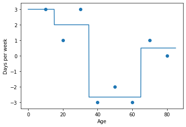
New residuals: [ 0.6 -0.6 1.4 -0.86666667 0.13333333 -0.86666667
0.6 -0.4 ]
**************************************************
Weak learner 2
Residuals to predict: [ 0.6 -0.6 1.4 -0.86666667 0.13333333 -0.86666667
0.6 -0.4 ]
Predictions: [ 0. 0. 1.4 -0.53333333 -0.53333333 -0.53333333
0.1 0.1 ]
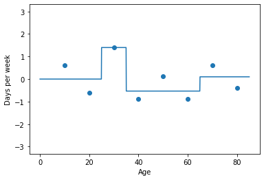
New residuals: [ 0.6 -0.6 0.28 -0.44 0.56 -0.44 0.52 -0.48]
**************************************************
Weak learner 3
Residuals to predict: [ 0.6 -0.6 0.28 -0.44 0.56 -0.44 0.52 -0.48]
Predictions: [ 6.00000000e-01 -6.00000000e-01 -7.40148683e-17 -7.40148683e-17
-7.40148683e-17 -7.40148683e-17 -7.40148683e-17 -7.40148683e-17]
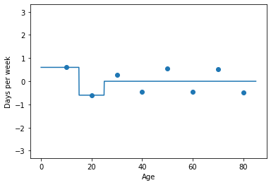
New residuals: [ 0.12 -0.12 0.28 -0.44 0.56 -0.44 0.52 -0.48]
**************************************************
Weak learner 4
Residuals to predict: [ 0.12 -0.12 0.28 -0.44 0.56 -0.44 0.52 -0.48]
Predictions: [-0.00666667 -0.00666667 -0.00666667 -0.00666667 -0.00666667 -0.00666667
0.52 -0.48 ]
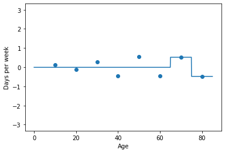
New residuals: [ 0.12533333 -0.11466667 0.28533333 -0.43466667 0.56533333 -0.43466667
0.104 -0.096 ]
Predictions of the first i learners
for i in range(1,5):
print("Up to weak learner number", i)
gb_intermediate = GradientBoostingRegressor(max_depth=2, n_estimators=i, learning_rate=0.8)
gb_intermediate.fit(features, labels)
predictions = gb_intermediate.predict(features)
plot_regressor(gb_intermediate, features, labels)
Up to weak learner number 1
---------------------------------------------------------------------------
NameError Traceback (most recent call last)
<ipython-input-11-9e6b9dc7ca14> in <module>
4 gb_intermediate.fit(features, labels)
5 predictions = gb_intermediate.predict(features)
----> 6 plot_regressor(gb_intermediate, features, labels)
NameError: name 'plot_regressor' is not defined
for tree in gradient_boosting_regressor.estimators_:
sklearn.tree.plot_tree(tree[0], rounded=True)
plt.show()
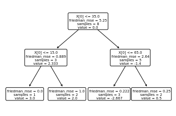
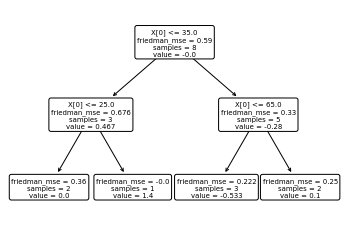
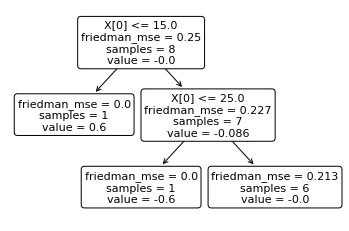
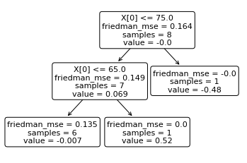
utils.display_tree(gradient_boosting_regressor.estimators_[0][0])
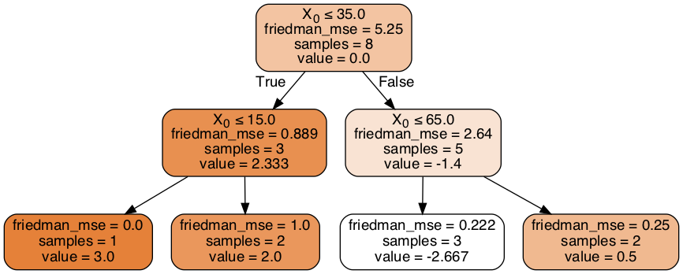
utils.display_tree(gradient_boosting_regressor.estimators_[1][0])
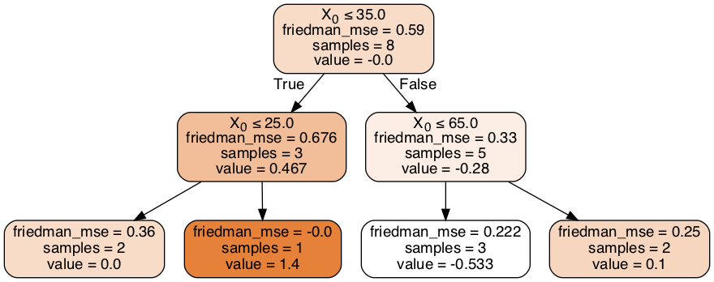
utils.display_tree(gradient_boosting_regressor.estimators_[2][0])
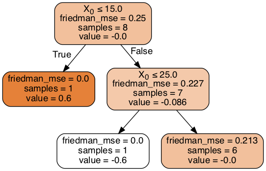
utils.display_tree(gradient_boosting_regressor.estimators_[3][0])
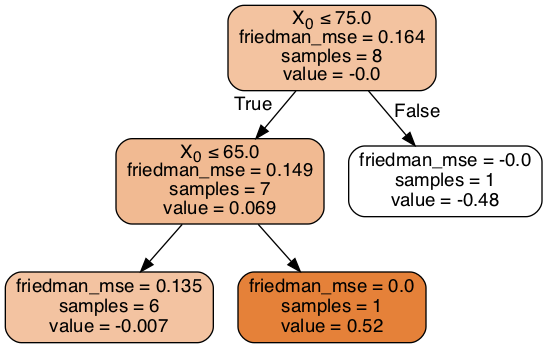
XGBoost#
import xgboost
from xgboost import XGBRegressor
xgboost_regressor = XGBRegressor(random_state=0,
n_estimators=3,
max_depth=2,
reg_lambda=0,
min_split_loss=1,
learning_rate=0.7)
xgboost_regressor.fit(features, labels)
xgboost_regressor.score(features, labels)
0.9438806326863372
utils.plot_regressor(xgboost_regressor, features, labels)
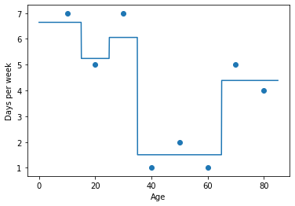
xgboost.to_graphviz(xgboost_regressor, num_trees=0)
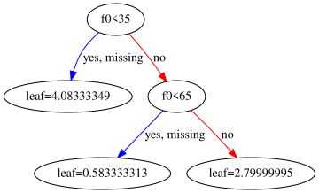
xgboost.to_graphviz(xgboost_regressor, num_trees=1)
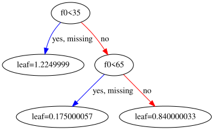
xgboost.to_graphviz(xgboost_regressor, num_trees=2)
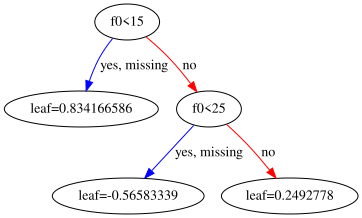
xgboost_regressor.predict(features)
array([6.6425 , 5.2425 , 6.057611 , 1.5076112, 1.5076112, 1.5076112,
4.3892775, 4.3892775], dtype=float32)
Calculations of similarity score#
residuals = labels-0.5
residuals
array([6.5, 4.5, 6.5, 0.5, 1.5, 0.5, 4.5, 3.5])
def score(l, lam=0):
if len(l)==0:
return 0
return sum(l)**2/(len(l)+lam)
score(residuals, lam=0)
98.0
lam = 0
for i in range(len(residuals)):
left = residuals[:i]
right = residuals[i:]
print(left, right)
print(score(left), score(right))
print(score(left, lam)+score(right, lam))
print()
[] [6.5 4.5 6.5 0.5 1.5 0.5 4.5 3.5]
0 98.0
98.0
[6.5] [4.5 6.5 0.5 1.5 0.5 4.5 3.5]
42.25 66.03571428571429
108.28571428571429
[6.5 4.5] [6.5 0.5 1.5 0.5 4.5 3.5]
60.5 48.166666666666664
108.66666666666666
[6.5 4.5 6.5] [0.5 1.5 0.5 4.5 3.5]
102.08333333333333 22.05
124.13333333333333
[6.5 4.5 6.5 0.5] [1.5 0.5 4.5 3.5]
81.0 25.0
106.0
[6.5 4.5 6.5 0.5 1.5] [0.5 4.5 3.5]
76.05 24.083333333333332
100.13333333333333
[6.5 4.5 6.5 0.5 1.5 0.5] [4.5 3.5]
66.66666666666667 32.0
98.66666666666667
[6.5 4.5 6.5 0.5 1.5 0.5 4.5] [3.5]
85.75 12.25
98.0
left_tree = [6.5, 4.5, 6.5]
right_tree = [0.5, 1.5, 0.5, 4.5, 3.5]
residuals = left_tree
print(score(residuals))
for i in range(len(residuals)):
left = residuals[:i]
right = residuals[i:]
print(left, right)
print(score(left), score(right))
print(score(left, lam)+score(right, lam))
print()
102.08333333333333
[] [6.5, 4.5, 6.5]
0 102.08333333333333
102.08333333333333
[6.5] [4.5, 6.5]
42.25 60.5
102.75
[6.5, 4.5] [6.5]
60.5 42.25
102.75
residuals = right_tree
print(residuals)
for i in range(len(residuals)):
left = residuals[:i]
right = residuals[i:]
print(left, right)
print(score(left), score(right))
print(score(left, lam)+score(right, lam))
print()
[0.5, 1.5, 0.5, 4.5, 3.5]
[] [0.5, 1.5, 0.5, 4.5, 3.5]
0 22.05
22.05
[0.5] [1.5, 0.5, 4.5, 3.5]
0.25 25.0
25.25
[0.5, 1.5] [0.5, 4.5, 3.5]
2.0 24.083333333333332
26.083333333333332
[0.5, 1.5, 0.5] [4.5, 3.5]
2.0833333333333335 32.0
34.083333333333336
[0.5, 1.5, 0.5, 4.5] [3.5]
12.25 12.25
24.5